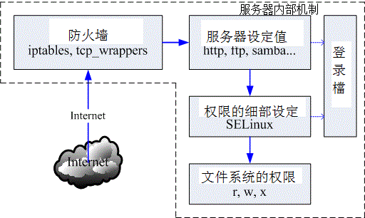
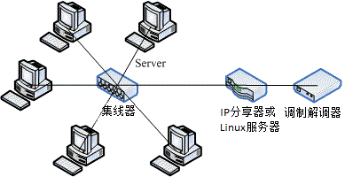
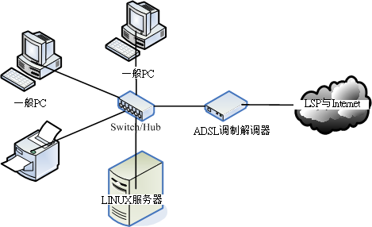
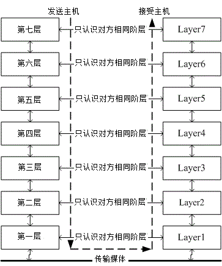
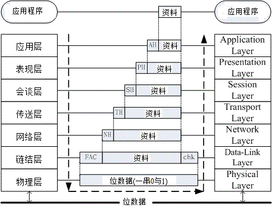
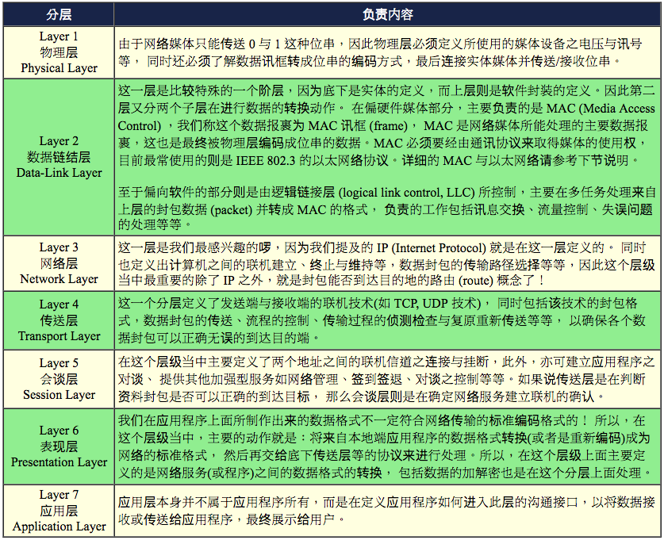
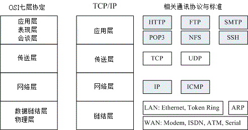

bird-linux_server
Table of Contents
- 第一部份：架站前的进修专区
- 第一章、架设服务器前的准备工作
- 1.1 前言： Linux 有啥功能
- 1.2 基本架设服务器流程
- 1.3 自我评估是否已经具有架设服务器的能力
- 1.4 本章习题
- 1.5 针对本文的建议：
- 第二章、基础网络概念
- 第一章、架设服务器前的准备工作
- 第二部分：主机的简易防火措施
- 第三部分：局域网络内常见的服务器架设
- 第四部分：常见因特网服务器架设
- 第五部分：一些旧数据
(http://cn.linux.vbird.org/linux_server/)
针对在 Linux 上的网络服务器来书写架设方式的，鸟哥主要以使用 RPM/YUM 作为软件安装的 CentOS 为基础系统。 CentOS 是属于 Red Hat Enterprise Linux (RHEL) 的操作系统，所以理论上 RHEL, CentOS, Fedora 等版本都适用的啦！ 为什么要使用默认的软件管理方式来安装所有的服务器程序呢？这是因为大多数的 Linux 开发商都会有所谓的在线升级系统， 包括 CentOS/Fedora 的 yum ，以及 SuSE 的 YOU ，还有 Debian 的 apt 等等， 因为有在线『自动升级』，所以当然会比您自己手动使用 Tarball 的安装方式来的方便且安全！ 因为你的系统上头所有的数据可以在第一时间内『自动』修补完毕
要维护好一部 Linux 主机，却是很困难的！您必须要熟悉 Linux 的系统架构、网络的基本知识如协议、IP、路由、DNS 等等的基础知识才行！
无论如何，您要开始『服务器架设篇』之前，请务必先读完『Linux 基础篇』的文章才行！
在架站的过程当中，无论出现任何问题，第一个步骤就是察看登录档 (log file)，那是克服问题的地方！
第一部份：架站前的进修专区
架站需要很强的 Linux 基础概念以及基础网络知识
在这一篇当中，鸟哥会介绍一下架设服务器之前你必须要具备的基础观念，以及重要的网络基础， 当然啦，一大堆的网络指令是需要熟悉的。这些网络指令不是要你背起来， 而是希望在你需要的时候可以很快速的查阅到如何使用
第一章、架设服务器前的准备工作
1.1 前言： Linux 有啥功能
1.1.1 只想用 Linux 架设服务器需要啥能力？ Linux 其实就是一套非常稳定的操作系统，任何工作只要能在 Linux 这个操作系统上面跑，那他就是 Linux 可以达成的功能之一啰！所以 Linux 的作用实在不止于网络服务器的架设
Linux 的强大网络功能确实是造成 Linux 能够在服务器领域内占有一席之地的重要项目
首先， Linux 到底可以达成哪些网络功能呢？这可就多着咯！不论是 WWW, Mail, FTP, DNS, 或者是 DHCP, NAT 与 Router 等等，Linux 系统都可以达到，而且，只要一部 Linux 就能够达到上面所有的功能了！当然，那是在不考虑网络安全与效能的情况下，你可以使用一部 Linux 主机来达成所有的网络功能。
『架站容易维护难』啊！更深一层来说，『维护还好、除错更难啊！』
所以说，架设服务器之前还是有一些基本的技能需要学会的！
Linux 训练我们时，是要我们去解决一个发现的问题， 这过程需要很多基础知识的培养，所以学完他之后，你会觉得很多事情都变的很简单而单纯。
1.1.2 架设服务器难不难呢？
要架设好一部堪称完美的服务器，『基本功课』
- 基础网络的基本概念，以方便进行联网与设定及除错；
- 熟悉操作系统的简易操作：包括登录分析、账号管理、文书编辑器的使用等等的技巧；
- 信息安全方面：包括防火墙与软件更新方面的相关知识等等；
- 该服务器协议所需软件的基本安装、设定、除错等，才有办法实作
认识操作系统与该操作系统的基本操作，还有那个重要的网络基础， 就是我们在架设服务器前的『基础科目』
举个简单的例子来说明一下啰！底下列出一般的架设服务器流程， 我们由架设服务器的流程当中，来看一看什么是重要的 Linux 相关技能
1.2 基本架设服务器流程
1.2.1 网络服务器成功联机的分析
就整个服务器的简易架设流程当中来分析一下，以了解为什么了解操作系统的基础对于网站维护是相当重要
先以底下这张图示来作个简单的说明:

图 1.2-1、网络联机至服务器所需经过的各项环节
你联机到服务器，重点在取得对方的数据， 而一般数据的存在就是使用档案啰！那你有没有权限取得？最终与该文件系统的设定有关
上图显示的是：首先，客户端到服务器的网络要能够通，等到客户端到达服务器后，会先由服务器的防火墙判断该联机能否放行， 等到放行之后才能使用到服务器软件的功能。而该功能又得要通过 SELinux 这个细部权限设定的项目后，才能够读取到文件系统。 但能不能读到文件系统呢？这又跟文件系统的权限 (rwx) 有关啦！上述的每个部分都要能够成功，否则就无法顺利读取数据
根据上面的流程我们大概可以将整个联机分为几个部分，包括：网络、服务器本身、内部防火墙软件设定、各项服务配置文件、细部权限的 SELinux 以及最终最重要的档案权限。
1. 网络：了解网络基础知识与所需服务之通讯协议
这部份你就得要了解：
- 基本的网络基础知识：包括以太网络硬件与协议、TCP/IP、网络联机所需参数等；
- 各网络服务所对应的通讯协议原理，以及各通讯协议所需对应的软件。
2. 服务器本身：了解架网络服务器之目的以配合主机的安装规划
架什么服务器？这个服务器要不要对 Internet 开放？这个服务要不要针对客户提供相关账号？ 要不要针对不同的客户账号进行例如磁盘容量、可活动空间与可用系统资源进行限制？如果要进行各项资源的限制， 那服务器操作系统应该要如何安装与设定？问题很多吧！所以，先了解你要的服务器服务目的之后，后续的规划才能陆续出炉
3. 服务器本身：了解操作系统的基本操作
网络服务软件是需要建置在操作系统上面的，所以基本的操作系统操作就得要了解
包括软件如何安装与移除？ 如何让系统进行例行的工作管理？如何依据服务器服务之目的规划文件系统？如何让文件系统具有未来扩充性 (LVM 之类)？ 系统如何管理各项服务之启动？系统的开机流程为何？系统出错时，该如何进行快速复原等等
4. 内部防火墙设定：管理系统的可分享资源
一部主机可以拥有多种服务器软件的运作，而很多 Linux distributions 出厂的默认值就已经开放很多服务给 Internet 使用了，不过这些服务可能并不是你想要开放的呢。我们在了解网络基础与所需服务的目的之后， 接下来就是透过防火墙来规范可以使用本服务器服务的用户，以让系统在使用上拥有较佳的控管情况。 此外，不管你的防火墙系统设定的再怎么严格，只要是你要开放的服务， 那防火墙对于该服务就没有保护的效果。因此，那个重要的在线更新软件机制就一定要定期进行！否则你的系统将会非常非常的不安全
5. 服务器软件设定：学习设定技巧与开机是否自动执行
刚刚第一点就提到我们得要知道每种服务所能达成的功能，如此一来才能够架设你所需要的服务的网站。 那你所需要的服务是由哪个软件达成的？同一个服务可否有不同的软件？每种软件可以达成的目的是否相同？ 依据所需要的功能如何设定你的服务器软件？架设过程中如果出现错误，你该如何观察与除错？ 可否定期的分析服务器相关的登录信息，以方便了解该服务器的使用情况与错误发生的原因？ 能否通知多个用户进行联机测试，以取得较佳的服务器设定值？所以这里你可能就得要知道：
- 软件如何安装、如何查询相关配置文件所在位置；
- 服务器软件如何设定？
- 服务器软件如何启动？如何设定自动开机启动？如何观察启动的埠口？
- 服务器软件激活失败如何除错？如何观察登录档？如何透过登录档进行除错？
- 透过客户端进行联机测试，如果失败该如何处理？联机失败的原因是服务器还是防火墙？
- 服务器的设定修改是否有建立日志？登录档是否有定期分析？
- 服务器所提供或分享的数据有无定期备份？如何定期自动备份或异地备份？
6. 细部权限设定：包括 SELinux 与档案权限
等到你的服务器全部设定妥当，最后你所提供的档案数据权限却是给了『 000 』的权限分数， 那鸟哥很肯定的说，大家都无法读到你所提供的数据啊…！此外，新的 distributions 都建议你要启动 SELinux ，那是什么咚咚？ 如果你的数据放置于非正规的目录，那该如何处理 SELinux 的问题？又如何让档案具有保密性或共享性 (档案权限概念与 ACL 等) 等等
这些基础如果学会了，最终，你只要知道第 5 点里面那个软件的基础设定，你的服务器一下子就可以设定完成
1.2.2 一个常见的服务器设定案例分析
提供一个简单的案例来分析一下:
- 网络环境：假设你的环境里面 (不管是家里还是宿舍) 共有五部计算机，这五部计算机需要串接在一起，且都可以对外联机；
- 对外网络：你的环境只有一个对外的联机方式，这里假设是台湾较流行的 ADSL 或 10M 的光纤这种透过电话线拨接的类型；
- 额外服务：你想要让这五部计算机都可以上网，而且其中还有一部可以做为网络驱动器机，提供同学或家人作为数据备份与分享之用；
- 服务器管理：由于你可能需要进行远程管理，因此你这部服务器得要开放联机机制，以让远程计算机可以联机到这部主机来进行维护；
- 防火墙管理：因为担心这部做为档案分享服务器的系统被攻击，因此你需要针对 IP 来源进行登入权力的控制；
- 账号管理：另外，由于同学的数据有隐密与共享之分，因此你还得要提供每个同学个别的账号， 且每个账号都有磁盘容量的使用限制；
- 后端分析：最后，由于担心系统出问题所以你得要让系统自动定期分析磁盘使用量、登录文件参数信息等等。
1.2.2-1 了解网络基础
硬件规划
我们想要将五部计算机串接在一块，但是却又只有一个可以对外的联机，此时就得要购买集线器 (hub) 或者是交换器 (switch) 来串接所有的计算机了。但是这两者有何不同？为何 switch 比较贵？我们知道网络线被称为 RJ-45 的网络线， 但网络线材竟然有等级之分，这个等级要怎么分辨？不同等级的线材速度有没有差异？等到这些硬件基础了解之后， 你才能够针对你的环境来进行联机的设计。这部份我们等到下一章再来介绍。
联机规划
由于只有一条对外联机而已，因此通常我们就建议你可以用如下的方式来串接你的网络：

图 1.2-2、硬件的网络联机示意图
透过 IP 分享器，我们的五部计算机就都能够上网了。此时你得要注意，能否上网与 Internet 有关，Internet 就是那有名的 TCP/IP 通讯协议，而想要了解网络就得要知道啥是 OSI 七层协定。我们也知道能连上 Internet 与所谓的 IP 有关，那么我们内部这五部计算机所取得的 IP 能不能拿来架站？也就是说， IP 有没有不同种类？ 如果 IP 分享器突然挂了，那你的这五部计算机能不能联机玩魔兽？这就考虑你的网络参数设定问题了！
网络基础
如果你不懂网络基础的 IP 相关参数，包括路由设定以及领域名系统 (DNS) 的话，肯定不知道怎么进行联机测试的。
这部份就很复杂了，包括 TCP/IP, Network IP, Netmask IP, Broadcast IP, Gateway, DNS IP 等等，都需要理解
1.2.2-2 服务器本身的安装规划与架站目的的搭配：全新安装
如同图 1.2-2 所示，Server 端是在那五部计算机之中，而且 Server 必须要提供针对不同账号给予网络驱动器机，我们这边会提供网芳 (SAMBA) 这个服务，因为他可以在 Linux/Windows 之间通用之故。 且由于需要提供账号给使用者，以及想到未来的磁盘扩充情况，因此我们想要将 /home 独立出来，且使用 LVM 这个管理模式， 并搭配 Quota 机制来控制每个账号的磁盘使用量。
所以说，你得知道 Linux 目录下的 FHS (Filesystem Hierarchy Standard) 的规范，否则分割槽给到错误的目录，会造成无法开机！那为什么要将 /home 独立放入一个分割槽？ 那是因为 quota 仅支持 filesystem 而不支持单一目录啊！好了，如果给你一部全新的主机，那你该如何安装你的系统呢？
由于 Linux 的安装我们已经在基础篇内的第四章介绍过了.
1.2.2-3 服务器本身的基本操作系统操作：建立账号, 修改权限, Quota, LVM
既然我们这部主机得要提供不同账号来使用他们自己的网络驱动器，因此还需要建立账号啊，使用磁盘配额 (quota) 等等的。 那么你会不会建立账号呢？你会不会建置共享目录呢？你能不能处理每个账号的 Quota 配额呢？如果 /home 的容量不足了， 你会不会放大 /home 的容量呢？有没有办法将系统的磁盘使用情况定期的发送邮件给管理员呢？这些都是基本的维护行为
例题-大量建置账号
假设我的五个朋友账号分别是 vbirduser{1,2,3,4,5}，且这五个朋友未来想要共享一个目录，因此应该要加入同一个群组，假设这个群组为 vbirdgroup，且这五个账号的密码均为 password 。那该如何建置这五个账号？
可以写一支脚本程序来进行上述的工作:
[root@localhost ~]# mkdir bin [root@localhost ~]# cd /root/bin [root@localhost bin]# vim useradd.sh #!/bin/bash groupadd vbirdgroup for username in vbirduser1 vbirduser2 vbirduser3 vbirduser4 vbirduser5 do useradd -G vbirdgroup $username echo "password" | passwd --stdin $username done [root@localhost bin]# sh useradd.sh [root@localhost bin]# id vbirduser1 uid=501(vbirduser1) gid=502(vbirduser1) groups=502(vbirduser1),501(vbirdgroup) context=root:system_r:unconfined_t:SystemLow-SystemHigh
例题-共享目录的权限
这五个朋友的共享目录建置于 /home/vbirdgroup 这个目录，这个目录只能给这五个人使用，且每个人均可于该目录内进行任何动作！ 若有其他人则无法使用 (没有权限)，那该如何建置这个目录的权限呢？
考虑到共享目录，因此目录需要有 SGID 的权限才行！否则个别群组数据会让这五个人彼此间无法修改对方的数据的。因此需要这样做：
[root@localhost ~]# mkdir /home/vbirdgroup [root@localhost ~]# chgrp vbirdgroup /home/vbirdgroup [root@localhost ~]# chmod 2770 /home/vbirdgroup [root@localhost ~]# ll -d /home/vbirdgroup drwxrws---. 2 root vbirdgroup 4096 2011-07-14 14:49 /home/vbirdgroup/ # 上面特殊字体的部分就是你需要注意的部分啰！特别注意那个权限的 s 功能喔！
例题-Quota 实作
假设这五个用户均需要进行磁盘配额限制，每个用户的配额为 2GB (hard) 以及 1.8GB (soft)，该如何处理？
这一题实作比较难，因为必须要包括文件系统的支持、quota 数据文件建置、quota 启动、建立用户 quota 信息等过程。 整个过程在基础篇有讲过了，这里很快速的带领大家进行一次吧！
# 1. 启动 filesystem 的 Quota 支持 [root@localhost ~]# vim /etc/fstab UUID=01acf085-69e5-4474-bbc6-dc366646b5c8 / ext4 defaults 1 1 UUID=eb5986d8-2179-4952-bffd-eba31fb063ed /boot ext4 defaults 1 2 /dev/mapper/server-myhome /home ext4 defaults,usrquota,grpquota 1 2 UUID=605e815f-2740-4c0e-9ad9-14e069417226 /tmp ext4 defaults 1 2 ....(底下省略).... # 因为是要处理用户的磁盘，所以找到的是 /home 这个目录来处理的啊！ # 另外，CentOS 6.x 以后，默认使用 UUID 的磁盘代号而非使用文件名。 # 不过，你还是能使用类似 /dev/sda1 之类的档名啦！ [root@localhost ~]# umount /home; mount -a [root@localhost ~]# mount | grep home /dev/mapper/server-myhome on /home type ext4 (rw,usrquota,grpquota) # 做完使用 mount 去检查一下 /home 所在的 filesystem 有没有上述的字眼！ # 2. 制作 Quota 数据文件，并启动 Quota 支持 [root@localhost ~]# quotacheck -avug quotacheck: Scanning /dev/mapper/server-myhome [/home] done ....(底下省略).... # 会出现一些错误的警告信息，但那是正常的！出现上述的字样就对了！ [root@localhost ~]# quotaon -avug /dev/mapper/server-myhome [/home]: group quotas turned on /dev/mapper/server-myhome [/home]: user quotas turned on # 3. 制作 Quota 数据给用户 [root@localhost ~]# edquota -u vbirduser1 Disk quotas for user vbirduser1 (uid 500): Filesystem blocks soft hard inodes soft hard /dev/mapper/server-myhome 20 1800000 2000000 5 0 0 # 因为 Quota 的单位是 KB ，所以这里要补上好多 0 啊！看的眼睛都花了！ [root@localhost ~]# edquota -p vbirduser1 vbirduser2 # 持续作几次，将 vbirduser{3,4,5} 通通补上去！ [root@localhost ~]# repquota -au *** Report for user quotas on device /dev/mapper/server-myhome Block grace time: 7days; Inode grace time: 7days Block limits File limits User used soft hard grace used soft hard grace ---------------------------------------------------------------------- root -- 24 0 0 3 0 0 vbirduser1 -- 20 1800000 2000000 5 0 0 vbirduser2 -- 20 1800000 2000000 5 0 0 vbirduser3 -- 20 1800000 2000000 5 0 0 vbirduser4 -- 20 1800000 2000000 5 0 0 vbirduser5 -- 20 1800000 2000000 5 0 0 # 看到没？上述的结果就是有发现到设定的 Quota 值啰！整个流程就是这样！
例题-文件系统的放大 (LVM)
(refer to 3. 逻辑卷轴管理员 (Logical Volume Manager)
纯粹假设的，我们的 /home 不够用了，你想要将 /home 放大到 7GB 可不可行啊？
因为当初就担心这个问题，所以 /home 已经是 LVM 的方式来管理了。此时我们要来瞧瞧 VG 够不够用，如果够用的话， 那就可以继续进行。如果不够用呢？我们就得要从 PV 着手啰！整个流程可以是这样来观察的。
# 1. 先看看 VG 的量够不够用： [root@localhost ~]# vgdisplay --- Volume group --- VG Name server System ID Format lvm2 ....(中间省略).... VG Size 4.88 GiB <==只有区区 5G左右 PE Size 4.00 MiB Total PE 1249 Alloc PE / Size 1249 / 4.88 GiB Free PE / Size 0 / 0 <==完全没有剩余的容量了！ VG UUID SvAEou-2quf-Z1Tr-Wsdz-2UY8-Cmfm-Ni0Oaf # 真惨！已经没有多余的 VG 容量可以使用了！因此，我们得要增加 PV 才行。 # 2. 开始制作出所需要的 partition 吧！作为 PV 用的！ [root@localhost ~]# fdisk /dev/sda <==详细流程我不写了！自己瞧 Command (m for help): p Device Boot Start End Blocks Id System ....(中间省略).... /dev/sda8 1812 1939 1024000 83 Linux <==最后一个磁柱 Command (m for help): n First cylinder (1173-3264, default 1173): 1940 <==上面查到的号码加 1 Last cylinder, +cylinders or +size{K,M,G} (1940-3264, default 3264): +2G Command (m for help): t Partition number (1-9): 9 Hex code (type L to list codes): 8e Command (m for help): p Device Boot Start End Blocks Id System /dev/sda9 1940 2201 2104515 8e Linux LVM <==得到 /dev/sda9 Command (m for help): w [root@localhost ~]# partprobe <==在虚拟机上面得要 reboot 才行！ # 3. 将 /dev/sda9 加入 PV，并将该 PV 加入 server 这个 VG 吧 [root@localhost ~]# pvcreate /dev/sda9 [root@localhost ~]# vgextend server /dev/sda9 [root@localhost ~]# vgdisplay ....(前面省略).... VG Size 6.88 GiB <==这个 VG 最大就是 6.88G 啦 ....(中间省略).... Free PE / Size 513 / 2.00 GiB <==有多出 2GB 的容量可用了！ # 4. 准备加大 /home，开始前，还是先观察一下才增加 LV 容量较好！ [root@localhost ~]# lvdisplay --- Logical volume --- LV Name /dev/server/myhome <==这是 LV 的名字！ VG Name server ....(中间省略).... LV Size 4.88 GiB <==只有 5GB 左右，需要增加 2GB 啰 ....(底下省略).... # 看起来，是需要增加容量啰！我们使用 lvresize 来扩大容量吧！ [root@localhost ~]# lvresize -L 6.88G /dev/server/myhome Rounding up size to full physical extent 6.88 GiB Extending logical volume myhome to 6.88 GiB <==处理完毕啰！ Logical volume myhome successfully resized # 看来确实是扩大到 6.88GB 啰！开始处理文件系统吧！ # 5. 扩大文件系统 [root@localhost ~]# resize2fs /dev/server/myhome resize2fs 1.41.12 (17-May-2010) Filesystem at /dev/server/myhome is mounted on /home; on-line resizing required old desc_blocks = 1, new_desc_blocks = 1 Performing an on-line resize of /dev/server/myhome to 1804288 (4k) blocks. The filesystem on /dev/server/myhome is now 1804288 blocks long. [root@localhost ~]# df -h 文件系统 Size Used Avail Use% 挂载点 /dev/mapper/server-myhome 6.8G 140M 6.4G 3% /home ....(其他省略).... # 可以看到文件系统确实有放大到 6.8G 喔！这样了解了吗？
1.2.2-4 服务器内部的资源管理与防火墙规划
安装好了你的 Linux 之后，系统到底开放了多少服务呢？这些服务有没有对外面的世界开放监听？ 这些服务有没有漏洞或者是能不能进行网络在线更新？这些服务如果没有要用到，能不能关闭？此外， 这些服务能不能仅开放给部分的来源使用而不是对整个 Internet 开放？
底下我们就以几个小案例来让你了解一下，到底哪些数据是你必须要熟悉
例题-不同 runlevel 的服务控管：
(refer to 第十八章、认识系统服务 (daemons))
在目前的 runlevel 之下，取得预设启动的服务有哪些呢？此外，我的系统目前不想启动自动网络挂载 (autofs) 机制，我不想要启动该服务的话，该如何处理？
默认的 runlevel 可以使用 runlevel 这个指令来处理，那我们预设使用 3 号的 runlevel，因此你可以这样做：
[root@localhost ~]# LANG=C chkconfig --list | grep '3:on'
上面指令的输出讯息中，会有 autofs 服务是在启动的状态，如果想要关闭他，可以这样做：
[root@localhost ~]# chkconfig autofs off [root@localhost ~]# /etc/init.d/autofs stop
上面提到的仅只是有启动的服务，如果我想要了解到启动监听 TCP/UDP 封包的服务 (网络封包格式下章会谈到)，那该如何处理？ 可以参考底下这个练习题
例题-查询启动在网络监听的服务
我想要检查目前我这部主机启动在网络端口监听的服务有哪些，并且关闭不要的程序，该如何进行？
网络监听的端口分析，可以使用如下的方式分析到：
[root@localhost ~]# netstat -tulnp
Active Internet connections (only servers)
Proto Recv-Q Send-Q Local Address Foreign Address State PID/Program name
tcp 0 0 0.0.0.0:111 0.0.0.0:* LISTEN 1005/rpcbind
tcp 0 0 0.0.0.0:22 0.0.0.0:* LISTEN 1224/sshd
tcp 0 0 127.0.0.1:25 0.0.0.0:* LISTEN 1300/master
tcp 0 0 0.0.0.0:35363 0.0.0.0:* LISTEN 1023/rpc.statd
tcp 0 0 :::111 :::* LISTEN 1005/rpcbind
tcp 0 0 :::22 :::* LISTEN 1224/sshd
tcp 0 0 ::1:25 :::* LISTEN 1300/master
tcp 0 0 :::36985 :::* LISTEN 1023/rpc.statd
udp 0 0 0.0.0.0:5353 0.0.0.0:* 1108/avahi-daemon:
udp 0 0 0.0.0.0:58474 0.0.0.0:* 1108/avahi-daemon:
....(底下省略)....
现在假设我想要关闭 avahi-daemon 这个服务以移除该服务启动的埠口时，应该要如同上题一样， 利用 etc/init.d/xxx stop 关闭，再使用 chkconfig 去处理开机不启动的行为！不过，因为启动的服务名称与实际指令可能不一样， 我们在 netstat 上面看到的 program 项目是实际软件执行文件，可能与 /etc/init.d 底下的服务档名不同，因此可能需要使用 grep 去撷取数据， 或者透过那好棒的 [tab] 按键去取得相关的服务档名才行。
[root@localhost ~]# /etc/init.d/avahi-daemon stop [root@localhost ~]# chkconfig avahi-daemon off
例题-利用 yum 进行系统更新
(Refer to 4.2 yum 的配置档)
假设你的网络已经通了，目前你想要处理全系统更新，同时需要每天凌晨 2:15 自动进行全系统更新，该如何作？
全系统更新使用 yum update 即可。但是由于 yum update 需要使用者手动输入 y 去确认真的要安装，因此在 crontab 里头处理相关任务时， 就得要使用 yum -y update 了！
[root@localhost ~]# yum -y update # 第一次作会进行非常之久！因为系统真的有些数据要更新嘛！还是得等待的！ [root@localhost ~]# vim /etc/crontab 15 2 * * * root /usr/bin/yum -y update
这里还是要额外提醒各位喔，如果你的系统有更新过核心 (kernel) 这个软件，务必要重新启动啊！因为核心是在开机时载入的， 一经加载就无法在这次的操作中更改版本
通过了上述的各项设定后，我们的 Linux 系统应该是比较稳定些了，再接着下来，我们要开始来设定资源的保护了！ 例如 ssh 这个远程可登入的服务得要限制住可登入的 IP 来源，以及制订防火墙规则流程等。 这部份则是本教学文件后续要着重介绍的部分，留待后面章节再来谈
1.2.2-5 服务器软件设定：学习设定技巧与开机是否自动执行
这部份就是整个服务器架设篇的重要内容了！
由于假设局域网络内的操作系统大部分是 Windows 好了，因此网芳应该是个比较合理的磁盘分享选择。 那么网芳到底启动了多少个埠口？是如何持续提供网芳数据的？提供的账号有没有限制？提供的权限该如何设定？ 是否可规定谁可登入某些特定目录？针对网芳服务的埠口该如何设定防火墙？如果系统出错该如何查询错误信息？ 这个网芳在 Linux 底下要使用什么服务来达成？
直接告诉你，网芳的制作在 Linux 底下是由 Samba 这套软件来达成的。Samba 的详细设定我们会在后续章节介绍。 这里要告诉你的是， 架设一个网芳服务器，你应该要会的基础知识有哪些？以及告诉你，你可以背下来的架设流程中， 理论上应该要经过哪些步骤的过程
1. 软件安装与查询
已经知道网芳需要安装的是 Samba 这套软件，那么该如何查询有没有安装呢？如果没有安装又该如何安装呢？
已安装的软件可以使用 rpm 去察看看，尚未安装的则使用 yum 功能。所以可以这样进行看看：
[root@localhost ~]# rpm -qa | grep -i samba samba-common-3.5.4-68.el6_0.2.x86_64 samba-client-3.5.4-68.el6_0.2.x86_64 samba-winbind-clients-3.5.4-68.el6_0.2.x86_64 # 看起来 samba 主程序尚未被安装啊！此时就要这样做： [root@localhost ~]# yum search samba <==先查一下有没有相关的软件 [root@localhost ~]# yum install samba <==找到之后，那就安装吧！ # 那么如何找出配置文件呢？因为我们总是需要修改配置文件啊！这样做吧： [root@localhost ~]# rpm -qc samba samba-common /etc/logrotate.d/samba /etc/pam.d/samba /etc/samba/smbusers /etc/samba/lmhosts /etc/samba/smb.conf /etc/sysconfig/samba
2. 服务器主设定与相关设定
要了解到，你到底需要的服务是什么，针对该服务需要设定的项目有哪些？ 这些设定需要用到什么指令或配置文件等等。一般来说，你得要先察看这个服务的通讯协议是啥，然后了解该如何设定， 接下来编辑主配置文件，根据主配置文件的数据去执行相对应的指令来取得正确的环境设定。以我们这里的网芳为例， 我们需要设定工作组，然后需要设定可以使用网芳的身份为非匿名，接下来就能够开始处理主配置文件。 因此你需要有：
- 先使用 vim 去编辑 /etc/samba/smb.conf 配置文件；
- 利用 useradd 建立所需要的网芳实体用户；
- 利用 smbpasswd 建立可用网芳的实体帐户；
- 利用 testparm 测试一下所有数据语法是否正确；
- 检查看看在网芳内分享的目录权限是否正确。
这些设定都搞定之后，才能够继续进行启动与观察的动作呦！而想要了解更多关于 samba 的相关设定技巧与应用， 除了 google 大神之外， /usr/share/doc 内的文件，以及 man 这个好用的家伙都必须要去阅读一番
3. 服务器的启动与观察
设定妥当之后，接下来当然就是启动该服务器了。一般服务器的启动大多是使用 stand alone 的模式， 如果是比较少用的服务，如 telnet ，就比较有可能使用到 super daemon 的服务启动类型。我们这里依旧使用 samba 为例
使用 rpm 去找一下软件的启动方式，然后再去处理启动的行为:
# 先查询一下启动的方式为何： [root@localhost ~]# rpm -ql samba | grep '/etc' /etc/logrotate.d/samba /etc/openldap/schema /etc/openldap/schema/samba.schema /etc/pam.d/samba /etc/rc.d/init.d/nmb /etc/rc.d/init.d/smb <==所以说是 stand alone 且档名为 smb, nmb 两个！ /etc/samba/smbusers # 开始启动他！且设定开机就启动喔！： [root@localhost ~]# /etc/init.d/smb start [root@localhost ~]# /etc/init.d/nmb start [root@localhost ~]# chkconfig smb on [root@localhost ~]# chkconfig nmb on # 接下来，让我们观察一下有没有启动相关的埠口吧！ [root@localhost ~]# netstat -tlunp | grep '[sn]mbd' tcp 0 0 :::139 :::* LISTEN 1484/smbd tcp 0 0 :::445 :::* LISTEN 1484/smbd udp 0 0 0.0.0.0:137 0.0.0.0:* 1492/nmbd udp 0 0 0.0.0.0:138 0.0.0.0:* 1492/nmbd
最终我们可以看到启动的埠口有 137, 138, 139, 445 喔！
4. 客户端的联机测试
接下来就是要找一部机器做为客户端，然后尝试使用本机器提供的网芳功能
很多时刻，客户端联机测试不成功并非是服务器设定的问题，很多是客户端使用方式不对！ 包括客户端自己的防火墙没开啦，客户端的账号权限密码等等记错啦等等
总体来说：『教育你的 Client 使用者具有最最基础的 Linux 账号、群组、档案权限等概念，才是一个彻底解决问题的方法』，但这也是最难的部分
5. 错误克服与观察登录档
一般来说，如果 Linux 上面的服务出现问题时，通常会在屏幕上面直接告诉你错误的原因为何，所以你得要注意屏幕讯息。 老实说，屏幕讯息通常就已经告诉你该如何处理了。如果还不能处理呢？你可以这样处置看看：
- 先看看相关登录文件有没有错误讯息，举例来说， samba 除了会在 var/log/messages 里面列出讯息外， 大部分的讯息应该是摆放在 /var/log/samba 这个目录下的数据，因此你就得先去查阅一番。通常在登录文件内的信息， 会比在屏幕上的还要仔细，那你就可以自行处理
- 将讯息带入 Google 查询
- 还是不成功，那就到各大讨论区去发问吧！建议到酷学园 (http://phorum.study-area.org)
最常出现的其实是 SELinux 的错误啦！此时就得要使用 SELinux 的方法来尝试处理啰！ 这也是本服务器篇后续会稍微提到的内容。
经过上面的流程，你就可以知道啦，架设好一部主机需要知道：(1)各个 process 与 signal 的观念；(2)账号与群组的观念与相关性；(3)档案与目录的权限，这当然包含与账号相关的特性； (4)软件管理员的学习；(5)BASH 的语法与 shell scripts 的语法，还有那个很重要的 vim 啰！：(6)开机的流程分析，以及记录登录文件的设定与分析；(7)还得知道类似 quota 以及连结档等等的概念。
1.2.2-6 细部权限与 SELinux
如果有些特殊的使用情况时，权限设定就是个很重要的因素。举例来说，我们系统上面，现在有 vbirduser{1,2,3,4,5} 以及 student 等账号，而共享目录为 /home/vbirdgroup。现在， vbirdgroup 的群组想要让 student 这个用户可以进入该共享目录查阅， 但是不能够更改他们原本的数据，你该如何进行呢？
你或许可以这样想：
- 让 student 加入 vbirdgroup 群组即可：但如此一来， student 具有 vbirdgroup 的 rwx 权限，也就可以写入与修改啰， 因此这个方案行不通。
- 将 /home/vbirdgroup 的权限改为 2775 即可：如此一来 student 拥有其他人的权限 (rx)，但如此一来其他所有任何人均拥有 rx 权限，这个方案也行不通。
传统的身份与权限概念就只有上面两种解决方案而已, 我们没有办法针对 student 进行权限设定！ 此时就得要使用 ACL
例题-单一用户、群组的权限设定 ACL 想要让 student 可以进入 /home/vbirdgroup 进行查询，但不可写入。同时 vbirduser5 在 /home/vbirdgroup 内， 不具有任何权限。
只能使用 ACL 啰！由于安装时预设格式化就加上 acl 的文件系统功能支持，因此你可以直接处理如下的各项指令。 如果你是使用后来新增的 partition 或 filesystem ，或许得要在 /etc/fstab 内额外增加 acl 控制参数才行
[root@localhost ~]# useradd student [root@localhost ~]# passwd student [root@localhost ~]# setfacl -m u:student:rx /home/vbirdgroup [root@localhost ~]# setfacl -m u:vbirduser5:- /home/vbirdgroup [root@localhost ~]# getfacl /home/vbirdgroup # file: home/vbirdgroup # owner: root # group: vbirdgroup # flags: -s- user::rwx user:vbirduser5:--- user:student:r-x <==就是这两行，额外的权限参数哩！ group::rwx mask::rwx other::--- [root@localhost ~]# ll -d /home/vbirdgroup drwxrws---+ 2 root vbirdgroup 4096 2011-07-14 14:49 /home/vbirdgroup
为了预防这种心不在焉的管理员，于是就有了 SELinux 这个玩意儿。SELinux 主要在控制细部的权限， 他可以针对某些程序要读取的档案来设计 SELinux 类别，当程序与档案的类别形态可以相符合时，该档案才能够开始被读取。 如此一来，当你配置文件案权限为 777 ，但是因为程序与档案的 SELinux 例行不符，所以没关系的，因为该程序还是读不到该档案！ 所以我们在图 1.2-1 才会将 SELinux 的图示绘制到 daemon 与 file permission 中间
事实上 SELinux 还挺复杂的，但是我们如果仅是想要应用而已，那么 SELinux 的处理方式通通可以透过登录档来处置！ 所以 SELinux 出现问题的机会非常大，但是解决技巧却很简单！就是透过登录档内的说明去作即可。 详细的作法我们在后续章节再持续说明
1.2.3 系统安全与备份处理
老实说，在鸟哥管理服务器的经验来说，硬件问题要比操作系统与软件问题还来的严重，而人的问题又比硬件问题严重！
先由严格的密码来建议: 『猜密码』仍是一个不可忽视的入侵手段！例如 SSH 如果对 Internet 开放的话，你又没有将 root 的登入权限关闭，那么对方将可能以 root 尝试登入你的 Linux 主机，这个时候对方最重要的步骤就是猜出你 root 的密码了！如果你 root 的密码设定成『1234567』哈哈！想不被入侵都很难～ 所以当然需要严格的规范用户密码的设定了！那么如何规范严格的密码规则呢？可以藉由 (1)修改 /etc/login.defs 档案里面的规则，以让用户需要每半年更改一次密码，且密码长度需要长于 8 个字符呢！(2)利用 /etc/security/limits.conf 来规范每个使用者的相关权限，让你的 Linux 可以较为安全一点点～(3)利用 pam 模块来额外的进行密码的验证工作。
另外，虽然『防火墙无用论』常常被提及，但是 netfilter (Linux 的核心内建防火墙) 其实仍有他存在的必要。 因此你还是得就要你自己的主机环境来设计专属于自己的防火墙规则，例如上面提到的 SSH 服务中， 你可以仅针对某个局域网络或某个特定 IP 开放联机功能即可
最后，备份是不可忽略的一环。本节开头就讲到了，鸟哥遇过常常莫名其妙自动重开机或系统不稳的，经常都不是被攻击， 而是硬件内部的电子零件老化所造成的系统不稳定…此时，异地备援啦、备用机器的接管理等等的，就很重要啰！
例题： 系统上比较重要的目录有 /etc, /home, /root, /var/spool/mail 等，你现在想要在每天 2:45am 进行备份，且备份数据存到 /backup 内， 备份的举动使用 tar ，那该如何处理？
答： 鸟哥通常是使用 shell script 来进行备份数据的汇整，范例如下：
[root@localhost ~]# mkdir /root/bin; vim /root/bin/backup.sh #!/bin/bash backdir="/etc /home /root /var/spool/mail" basedir=/backup [ ! -d "$basedir" ] && mkdir $basedir backfile=$basedir/backup.tar.gz tar -zcvf $backfile $backdir [root@localhost ~]# vim /etc/crontab 45 2 * * * root sh /root/bin/backup.sh
无论如何，以现今的网络功能及维护来看，架设一个『功能性强』的主机， 还不如架设一个『稳定且安全的主机』比较好一点. 因此，对于主机的安全要求就需要严格的要求.
如果你对于上面谈到的几个基础概念不是很清楚的话，那么建议你由底下的两个网站学起：
1.3 自我评估是否已经具有架设服务器的能力
很多人都只晓得 『如何架站』却不知到『如何维护一个网站的安全』！基本上， 维护一个已经架设好的网站的正常运作，真的要比架设一个网站难的多了！你得要随时知道你的系统状况， 随时注意是否有新的软件漏洞而去修补他，随时要注意各种服务的登录档案(logfile)以了解系统的运作情况！ 得知道发生问题的时候，到底问题点是在哪一个！
最严重的问题是，网管人员其实最需要的是 『道德感与责任感』！你可要晓得你的机器上所有人的隐私都在你的监控之下
总之，网管人员并不是只要会架站就可以了， 『道德感』『责任感』还有『耐心』
来评估看看你是否适合当一个称职的网管人员吧！
- 是否具有 Linux 的基础概念：这当然包含很多部分，例如账号管理、BASH、权限的概念、Process 与 signal 的概念、简易的硬件与 Linux 相关性 (如 mount)的认识、登录档案的解析、daemon 的认识等等，都需要有一定程度的了解；
- 是否具备基础网络知识： 没有网络知识想要架站，那是天方夜谭！请确认你已经熟悉 IP, Netmask, route, DNS, daemon 与 port, TCP 封包的概念等基本知识；
- 是否已经身心活化了： 网管人员必须要随时注意网站的相关信息，这包括网站软件的漏洞修补、 网络上公告的网络安全通报等等，还有，得要每日分析主机的登录文件， 你是否已经具备了随时注意这些信息的『耐心』呢？
- 是否具有道德感与责任感： 如果还是具有一点点的偷窥欲，再加油吧！^_^ ，另外，如果老板想要请你『偷窥』时，请想尽任何方法，让他理解这么做是多么的可笑～
1.4 本章习题
本章所安装的 samba 软件未来还会使用到，因此请先移除 samba 软件，并将本章例题中改写的 /etc/crontab 内容取消 (共两行)。
透过 yum remove samba 或 rpm -e samba 均可，然后用 vim /etc/crontab 将那两行取消吧！
如果我有一颗硬盘在 A 主机上面安装了 Linux 之后，拿到另一台配备相同的 B 主机上面去进行开机，结果竟然无法顺利开机，你认为可能的原因是什么？
不能开机常常是因为找不到根目录的位置，而根目录找不到通常就是磁盘的装置文件名错误所致。目前由于 /etc/fstab 配合 filesystem 都使用 LABEL name ，所以不容易发生这样的情况。但如果你曾经自行手动处理过 /etc/fstab 的话，那就必须要注意磁盘的装置文件名了！ 透过修改 /etc/fstab 以及 /boot/grub/menu.lst 或许能够得到方法解决。
一般来说，在 Linux 系统上，用户默认的家目录在那个目录下？另外，新增一个使用者时， 该用户默认的家目录内容来自那个目录下？
在 /etc/default/useradd 这个档案里面会规范用户的默认家目录以及默认家目录的内容，一般来说，用户默认家目录在 /home ，至于家目录内的档案则复制来源在 /etc/skel 里面。
我以原始码的方式进行一个软件的安装，但是在分析系统的时候，分析程序一直告诉我找不到 cc 这个指令，请问这是什么问题？为何需要 cc ？又，我该如何解决这个问题，好让软件可以顺利的被安装在我的 Linux 上面？
因为是原始码，所以还需要编译程序来将该原始码编译成为可以在你的 Linux 系统上面跑的 binary 档案，在 Linux 上头默认的编译程序就是 gcc 这个编译程序(compiler)。如果你在安装 Linux 的时候，使用 Linux Installer 默认的软件选择，那通常会没有安装 gcc 以及 make 等软件，此时，请使用 yum 去处理软件的安装吧！
我发现我的 Linux 系统怪怪的，似乎有什么不知名的程序在内存当中跑，我该如何将这个不知名的程序捉出来，并且将他移除？
如果要捉出程序(process)的话，可以使用 ps -aux 或者是直接输入 top 来查询 process 的 ID (PID)，找到 PID 号码后，再以 kill -9 PID 来删除该程序即可。
我总是无法编辑某个档案，你认为应该是什么问题造成的？那又要怎么解决？
无法编辑某个档案，可以先使用 file 这个指令来查询一下该档案的格式，例如想察看 /etc/shadow 的格式，可以下达： 『file /etc/shadow』，如果是文本文件，却还是无法编辑，那么最可能发生的原因就是『权限』的问题了。可以使用 ls -l filename 察看档案权限，再以 chmod 或 chown 来修订该档案的权限。此外，该档案也可能含有隐藏属性，可以使用 lsattr filename 查阅，再以 chattr 来修订隐藏属性。
你认为一个称职的网管人员应该具备什么能力？
能力需求相当高，如了(1)操作系统的基础知识(不论是 Linux/Unix/MAC/MS)；(2)网络基础的知识；(3)个别 Internet Services 的运作知识之外，还需要(4)身心保持在备战状态，以及(5)具有相当高程度的道德感、责任感与使命感。
我要关掉 cron 这个服务，应该怎么关掉他？如果正常的方法无法关闭这个服务，可以使用什么方法来关闭？
因为 cron 是一个 stand alone 的服务，所以可以使用 /etc/rc.d/init.d/cron stop 来关闭；如果还是无法正常关闭，可以使用 ps -aux | grep cron 捉出该程序的 PID ，然后以 kill -9 PID 来关闭。
如果一开机就要执行某个程序，应该要将该程序写入那个档案里面？
可以直接在 /etc/rc.d/rc[run-level].d 里面加入 S 开头的档案，不过，更简单的作法是直接将该程序写入 /etc/rc.d/rc.local ，不过，请注意该程序必须要具有可执行的权限，且 rc.local 也必须要是可执行喔！
1.5 针对本文的建议：http://phorum.vbird.org/viewtopic.php?t=23676
第二章、基础网络概念
(http://cn.linux.vbird.org/linux_server/0110network_basic.php)
这部份最重要的是 TCP/IP 与 OSI 七层协议的相关概念.
2.1 网络是个什么玩意儿
2.1.1 什么是网络
除了硬件之外，TCP/IP 这个 Internet 的通讯协议也是有标准的，这些标准大部分都以 RFC (Request For Comments, 注4) 的形式发布标准文件。 透过这些文件的辅助，任何人只要会写程序语言的话，就有可能发展出自己的 TCP/IP 软件， 并且连接上 Internet 。早期的 Linux 为了要连接上 Internet ，Linux 团队就自己撰写出 TCP/IP 的程序代码， 透过的就是这些基础文件的标准依据啊！举例来说 RFC 1122 (注5) 这个建议文件就指出一些可以联机到 Internet 的主机应该要注意的相关协议与基本需求， 让想要撰写联机程序的设计师可以有一个指引的标准方向。
2.1.2 计算机网络组成组件

图 2.1-1、计算机网络联机示意图
上图中，我们主要需要注意到的硬件有哪些呢？
- 节点 (node)：节点主要是具有网络地址 (IP) 的设备之称， 因此上面图示中的一般PC、Linux服务器、ADSL调制解调器与网络打印机等，个别都可以称为一个 node ！ 那中间那个集线器 (hub) 是不是节点呢？因为他不具有 IP ，因此 hub 不是节点。
- 服务器主机 (server)：就网络联机的方向来说，提供数据以『响应』给用户的主机， 都可以被称为是一部服务器。举例来说，Yahoo 是个 WWW 服务器，昆山的 FTP (http://ftp.ksu.edu.tw/) 是个文件服务器等等。
- 工作站 (workstation) 或客户端 (client)：任何可以在计算机网络输入的设备都可以是工作站， 若以联机发起的方向来说，主动发起联机去『要求』数据的，就可以称为是客户端 (client)。举例来说，一般 PC 打开浏览器对 Yahoo 要求新闻数据，那一般 PC 就是客户端。
- 网络卡 (Network Interface Card, NIC)：内建或者是外插在主机上面的一个设备， 主要提供网络联机的卡片，目前大都使用具有 RJ-45 接头的以太网络卡。一般 node 上都具有一个以上的网络卡， 以达成网络联机的功能。
- 网络接口：利用软件设计出来的网络接口，主要在提供网络地址 (IP) 的任务。 一张网卡至少可以搭配一个以上的网络接口；而每部主机内部其实也都拥有一个内部的网络接口，那就是 loopback (lo) 这个循环测试接口！
- 网络形态或拓朴 (topology)：各个节点在网络上面的链接方式，一般讲的是物理连接方式。 举例来说，上图中显示的是一种被称为星形联机 (star) 的方式，主要是透过一个中间连接设备， 以放射状的方式连接各个节点的一种形态，这就是一种拓朴。
- 网关 (route) 或通讯闸 (gateway)：具有两个以上的网络接口， 可以连接两个以上不同的网段的设备，例如 IP 分享器就是一个常见的网关设备。那上面的 ADSL 调制解调器算不算网关呢？ 其实不太能算，因为调制解调器通常视为一个在主机内的网卡设备，我们可以在一般 PC 上面透过拨号软件， 将调制解调器仿真成为一张实体网卡 (ppp) ，因此他不太能算是网关设备啦！
2.1.3 计算机网络区域范围
将网络的大小范围定义如下：(注6)
- 局域网络 (Local Area Network, LAN)： 节点之间的传输距离较近，例如一栋大楼内，或一个学校的校区内。可以使用较为昂贵的联机材料， 例如光纤或是高质量网络线 (CAT 6) 等。网络速度较快，联机质量较佳且可靠，因此可应用于科学运算的丛集式系统、 分布式系统、云端负荷分担系统等。
- 广域网 (Wide Area Network, WAN)： 传输距离较远，例如城市与城市之间的距离，因此使用的联机媒体需要较为便宜的设备，例如经常使用的电话线就是一例。 由于线材质量较差，因此网络速度较慢且可靠性较低一些，网络应用方面大多为类似 email, FTP, WWW 浏览等功能。
2.1.4 计算机网络协议： OSI 七层协定
我们可以将整个网络连接过程分成数个阶层 (layer)，每个阶层都有特别的独立的功能， 而且每个阶层的程序代码可以独立撰写，因为每个阶层之间的功能并不会互相干扰的。 如此一来，当某个小环节出现问题时，只要将该层级的程序代码重新撰写即可。所以程序撰写也容易，整个网络概念也就更清晰！ 那就是目前你常听到的 OSI 七层协定 (Open System Interconnection) 的概念

图 2.1-2、OSI 七层协议各阶层的相关性
在七层协议中，每层都会有自己独特的表头数据 (header)，告知对方这里面的信息是什么， 而真正的数据就附在后头啰！我们可以使用如下的图示来表示这七层每一层的名字，以及数据是如何放置到每一层的包裹内：

图 2.1-3、OSI 七层协议数据的传递方式
上图中仔细看每个数据报的部分，上层的包裹是放入下层的数据中，而数据前面则是这个数据的表头。其中比较特殊的是第二层， 因为第二层 (数据链结层) 主要是位于软件封包 (packet) 以及硬件讯框 (frame) 中间的一个阶层， 他必须要将软件包装的包裹放入到硬件能够处理的包裹中，因此这个阶层又分为两个子层在处理相对应的数据。 因为比较特殊，所以您瞧瞧，第二层的数据格式比较不一样喔，尾端还出现一个检查码
简单的说，每一层负责的任务如下：(注6, 注8, 注9):

事实上， OSI 七层协议只是一个参考的模型 (model)，目前的网络社会并没有什么很知名的操作系统在使用 OSI 七层协定的联网程序代码. 大家都拿 OSI 七层协议来做为网络的教学与概念的理解。至于实际的联网程序代码，那就交给 TCP/IP.
2.1.5 计算机网络协议： TCP/IP
OSI 七层协议的架构非常严谨，是学习网络的好材料。但是也就是因为太过严谨了，因此程序撰写相当不容易， 所以造成它在发展上面些许的困扰。而由 ARPANET 发展而来的 TCP/IP 又如何呢？其实 TCP/IP 也是使用 OSI 七层协议的观念， 所以同样具有分层的架构，只是将它简化为四层，在结构上面比较没有这么严谨，程序撰写会比较容易. 造成 TCP/IP 这个标准为大家所接受，这也造就目前我们的网络社会
TCP/IP 是由 OSI 七层协议简化而来，它们的相关性可以图示如下， 同时这里也列出目前在这架构底下常见的通讯协议、封包格式与相关标准：

图 2.1-4、OSI 与 TCP/IP 协议之相关性
- TCP/IP 将应用、表现、会谈三层整合成一个应用层，在应用层上面可以实作的程序协议有 HTTP, SMTP, DNS 等等。
- 传送层则没有变，不过依据传送的可靠性又将封包格式分为连接导向的 TCP 及非连接导向的 UDP 封包格式。
- 网络层也没有变，主要内容是提供了 IP 封包，并可选择最佳路由来到达目标 IP 地址。
- 数据链结层与物理层则整合成为一个链结层，包括定义硬件讯号、 讯框转位串的编码等等，因此主要与硬件 (不论是区网还是广域网) 有关。
那 TCP/IP 是如何运作的呢？拿妳常常连上的 Yahoo 入口网站来做个说明好了，整个联机的状态可以这样看：
- (0) 应用程序阶段：妳打开浏览器，在浏览器上面输入网址列，按下 [Enter]。此时网址列与相关数据会被浏览器包成一个数据， 并向下传给 TCP/IP 的应用层；
- (1) 应用层：由应用层提供的 HTTP 通讯协议，将来自浏览器的数据报起来，并给予一个应用层表头，再向传送层丢去；
- 传送层：由于 HTTP 为可靠联机，因此将该数据丢入 TCP 封包内，并给予一个 TCP 封包的表头，向网络层丢去；
- (2) 网络层：将 TCP 包裹包进 IP 封包内，再给予一个 IP 表头 (主要就是来源与目标的 IP 啰)，向链结层丢去；
- (3) 链结层：如果使用以太网络时，此时 IP 会依据 CSMA/CD 的标准，包裹到 MAC 讯框中，并给予 MAC 表头，再转成位串后， 利用传输媒体传送到远程主机上。
等到 Yahoo 收到你的包裹后，在依据相反方向拆解开来，然后交给对应的层级进行分析，最后就让 Yahoo 的 WWW 服务器软件得到你所想要的数据，该服务器软件再根据你的要求，取得正确的资料后，又依循上述的流程，一层一层的包装起来， 最后传送到你的手上！
根据这样的流程，我们就得要知道每个分层所需要了解的基础知识，这样才算学习网络基础嘛！所以底下我们会依据 TCP/IP 的链结层、网络层、传送层来进行说明，应用层的协议则在后续章节中有对应的协定再来谈啰！同时我们也知道， 网络媒体一次传输的数据量是有限的，因此如果要被传输的数据太大时，我们在分层的包装中，就得要将数据先拆开放到不同的包裹中， 再给包裹一个序号，好让目的端的主机能够藉由这些序号再重新将数据整合回来！
Tip: 一般来说，因为应用程序与程序设计师比较有关系，而网络层以下的数据则主要是操作系统提供的，因此， 我们又将 TCP/IP 当中的应用层视为使用者层，而底下的三层才是我们主要谈及的网络基础！所以这个章节主要就是介绍这三层